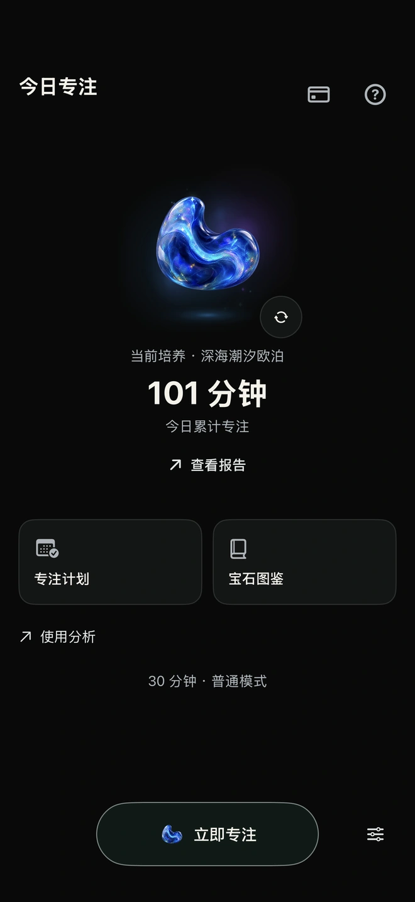
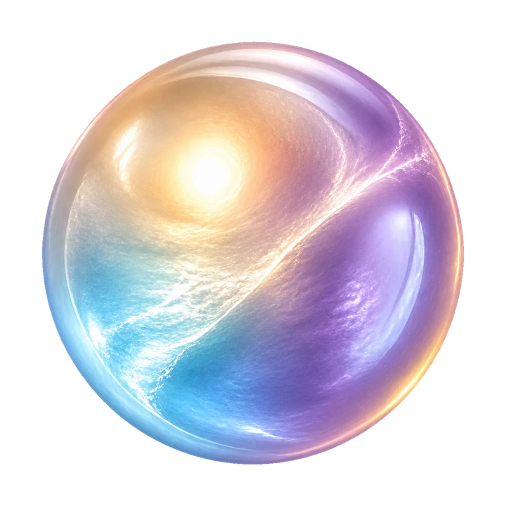
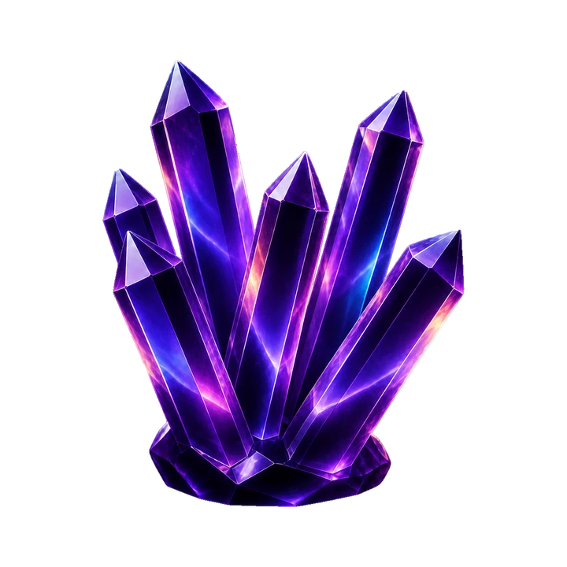
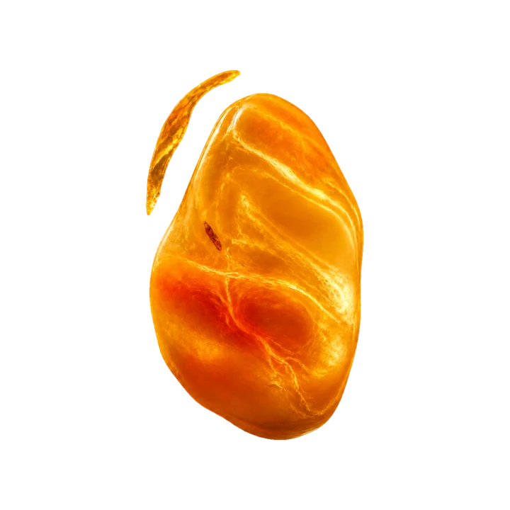
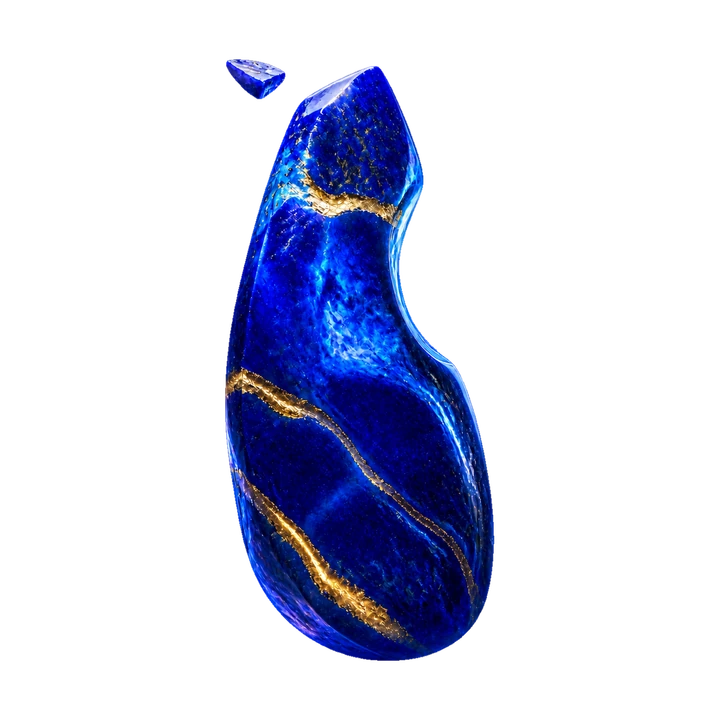
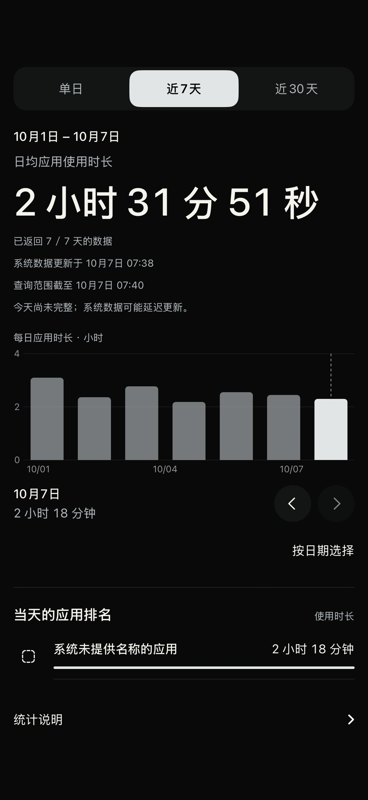

你认真投入的时间，会有自己的光。
为重要的事，
留下一段完整的时间。
现在开始。
其余交给时间。
- 选择分心来源。授权屏幕使用时间，选择要限制的 App、类别或网站。
- 留一段时间给自己。选择时长与模式，按住“立即专注”，开始投入。
- 完成，再回看。让宝石成长，回看专注日历和自己的节奏。
专注限制需要 Apple 屏幕使用时间权限。

让心慢下来，
再做决定。
在契约模式中选择“沉石静候”。想提前结束时，跟随微光慢慢呼吸，听一会儿海浪，片刻之后再做选择。
也可以选择朗读承诺，或解一道 6×6 数独。普通模式、契约模式均可免费使用；严格模式需要 Pro。

每一种光，
都有自己的模样。



图鉴宝石示例 · 部分宝石需要 Pro，成长需要完成专注。
看见使用习惯，
也看见自己的投入。
使用分析展示这台 iPhone 的应用使用趋势，以及所选日期的应用时长排名。它与专注日历分开：前者来自 Apple 屏幕使用时间，后者记录你在专注石里完成的专注。
系统报告的可用数据和显示时间由 iOS 决定；范围与系统设置或其他 App 不同时，数值可能不同。

按自己的节奏，
选择需要的支持。
| 功能 | 免费 | Pro |
|---|---|---|
| 立即专注、普通及契约模式 | 支持 | 支持 |
| 可用专注计划 | 1 个 | 更多计划 |
| 报告回看范围 | 近 7 天 | 近 30 天 |
| 严格模式、高级宝石 | 不含 | 支持 |
宝石成长需要完成专注。订阅价格、试用与优惠资格以 Apple 购买页面为准。
下一段时间，
留给重要的事。
在 App Store 查看下载及新版本可用性以你所在地区的 App Store 为准。核心专注与记录在设备端运行；商品加载、购买和恢复购买会连接 Apple 服务。